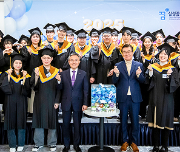
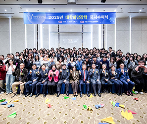
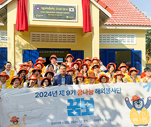
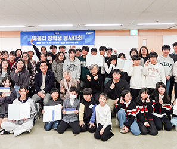
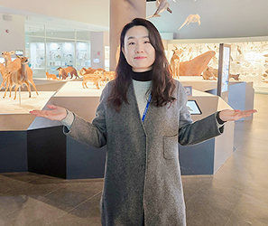

더불어 성장하는 배움공동체
사람이 있을 곳을 지원하고 ,
배우는 것을 원칙으로 합니다.
장학사업
별 희망을 그리다
-
멘토링 꿈 장학사업
학생들이 멘토 선생님의 교육적, 정서적 지지를 받으면서 자신의 꿈을 찾고 재능을 개발할 수 있도록 장학금을 지원하는 사업
자세히보기 -
리더육성 장학사업
학업역량 및 의지가 우수한 학생을 선발하여,
자세히보기
성장할 수 있도록 장학금과 교육 프로그램을
맞춤형으로 지원하는 사업입니다. -
배움터 교육지원 사업
지역적·사회경제적 이유로 교육지원이 필요한
자세히보기
아동·청소년을 위하여 지역의 다양한 배움터들
이 협력하여 교육복지를 지원하는 사업입니다. -
글로벌 장학사업
현지 아동·청소년을 교육적으로 지원하고,
자세히보기
개발도상국 출신 대학(원)생을 지원하여
글로벌 리더로 양성하는 사업입니다. -
방과 후 학교 대상
삼성꿈장학재단,한국교육개발원, 중앙일보가
자세히보기
공동주관하여, 우수한 방과후학교 프로그램을
운영하는 학교, 교사, 비영리단체를 시상 -
청소년 치아교정 지원
가정형편으로 인해 적절한 치료를 받지 못한
자세히보기
청소년에게 대한치과교정학회와 (사)바른이봉
사회의 후원으로 무료 치아교정의 기회를 제공
재단뉴스
별 마음을 전하다
-
리더육성 장학업
더 큰 발걸음을 내딛기 위해 새 로운 출발선 앞에 서다
졸업과 함께 인생의 새로운 장을 맞이 하게 된 졸업생들의 얼굴에는
-
리더육성 장학사업
우리의 무한한 가능성을 믿어!
후배 장학생들의 희망이 될 주인공들 의 웃음소리로 가득했던 장학증서 수
-
리더육성 장학업
언어 장벽을 넘어 희망을 함께 나눈 특별한 순간
언어와 날씨 장벽을 넘어 캄보디아 아 이들과 진심으로 소통하며,한층
-
리더육성 장학업
친구들과 배우며 익히는 봉사 활동의 의미
내가 배운 지식과 경험을 봉사로 녹여 내 지역 내에 선한 영향력을
-
리더육성 장학업
미래 세대를 위해 생물다양성 을 지켜내는 연구원
집단유전학 분야에서 후대의 미래선 택 권을 주기 위해 생물다양성